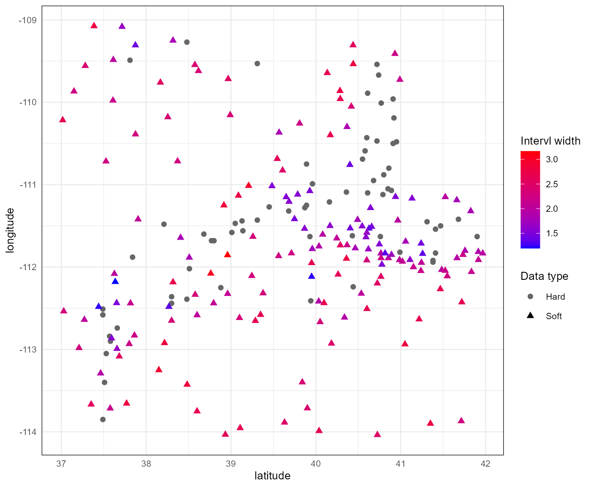
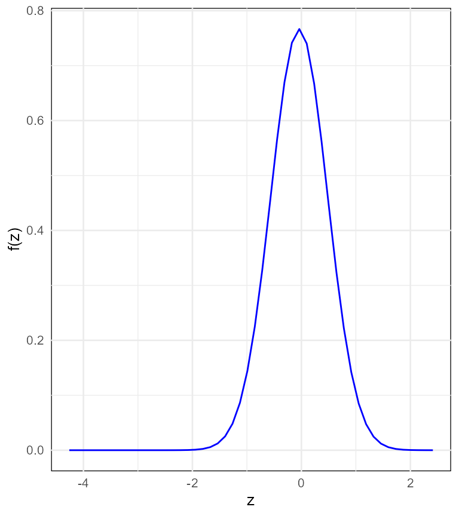

vignettes/Introduction_to_BMEmapping.Rmd
Introduction_to_BMEmapping.RmdThe Bayesian Maximum Entropy (BME) framework offers a robust and versatile approach for space-time data analysis and uncertainty quantification. By integrating principles from Bayesian statistics and the maximum entropy formalism, BME enables the construction of optimal estimates for spatial or spatiotemporal processes in the presence of both precise (hard) and imprecise (soft) data. While hard data correspond to exact point-value measurements, soft data may take the flexible forms of intervals, probability distributions, or qualitative descriptors, making BME particularly well-suited for complex real-world datasets.
The BMEmapping R package provides a user-friendly implementation of core BME methodologies, facilitating geostatistical modeling, prediction, and data fusion. It allows for a systematic integration of heterogeneous data sources, incorporates prior knowledge, and supports variogram-based spatial modeling—essential tools for accurate and interpretable spatial interpolation.
Specifically, BMEmapping is designed to perform spatial interpolation at unobserved locations using both hard and soft-interval data. This vignette introduces the fundamental functionality of the package and guides users through its basic usage.
To begin, load the package with:
The main functions available in BMEmapping include:
bme_map - creates a BMEmapping object that
contains all the data information necessary for BME interpolation.
prob_zk - computes and optionally plots the posterior
density estimate at a single unobserved location.
bme_predict - predicts the posterior mean or mode and
the associated variance at an unobserved location.
bme_cv - performs a cross-validation on the hard data to
assess model performance.
To introduce the functionality of BMEmapping, we
will look at a modeling problem for estimating reliability-targeted snow
loads in the state of Utah. The utsnowload data that is
part of the package and can be accessed by the command
data("utsnowload")
head(utsnowload)
#> latitude longitude hard lower upper
#> 1 40.44 -112.24 0.09696012 NA NA
#> 2 39.94 -112.41 0.12258678 NA NA
#> 3 37.51 -113.40 -0.02302358 NA NA
#> 4 37.49 -113.85 0.50354362 NA NA
#> 5 39.31 -109.53 -0.68611327 NA NA
#> 6 40.72 -109.54 -0.53000397 NA NAThe variables latitude and longitude
represent the geographic coordinates of each location. The variable
hard contains the values of precise (hard) data
measurements, while lower and upper define the
bounds of the soft interval data.
Complete documentation for the utsnowload dataset can be
accessed using the command
?utsnowloadThe BMEmapping functions require the following input arguments:
x: A matrix specifying the geographic location(s) where
predictions are to be made.
ch: A matrix or data frame containing the geographic
coordinates of the hard data locations.
cs: A matrix or data frame containing the geographic
coordinates of the soft-interval data locations.
zh: A vector of observed hard data values corresponding
to the locations in ch.
a: A vector of lower bounds for the soft-interval data
at locations cs.
b: A vector of upper bounds for the soft-interval data
at locations cs.
Before using BMEmapping, the user must fit a variogram
model to the spatial data. This step involves specifying the type of
variogram and its associated parameters:
model: The variogram model type. Supported options
are “exp” (Exponential), “sph” (Spherical), and “gau” (Gaussian). The
appropriate model should be selected based on the spatial structure of
the data.
nugget: The nugget effect of the variogram,
representing measurement error or microscale variation.
sill: The sill of the variogram, indicating the
plateau value of the semivariance.
range: The range (or effective range) of the
variogram, representing the distance beyond which spatial correlation
becomes negligible.
A recommended tool for variogram modeling is the gstat package, which provides a robust suite of functions for fitting and analyzing variograms.
nhmax: Maximum number of nearby hard data points to
include in the integration process.
nsmax: Maximum number of nearby soft-interval data
points to include in the integration process.
zk_range: A numeric vector specifying the range over
which to evaluate the unobserved value at the estimation
location.
n: An integer indicating the number of points at
which to evaluate the posterior density over
zk_range.
The optional parameters are set to their default values. For further
details, refer to the function documentation (e.g.,
?prob_zk).
Using the utsnowload dataset, you can prepare the
necessary input variables as shown below. In this example, we designate
the last 5 soft data locations (locations 228 to 232)
as the prediction locations.
# prediction location
x <- utsnowload[228:232, c("latitude", "longitude")]
x
#> latitude longitude
#> 228 40.3000 -111.2550
#> 229 40.4447 -111.7075
#> 230 40.7908 -111.4078
#> 231 37.7064 -112.1456
#> 232 40.9139 -111.3983The hard and soft-interval data are assigned as
# hard data locations
ch <- utsnowload[1:67, c("latitude", "longitude")]
# soft data locations
cs <- utsnowload[68:227, c("latitude", "longitude")]
# hard data values
zh <- utsnowload[1:67, c("hard")]
# lower bounds
a <- utsnowload[68:227, c("lower")]
# upper bounds
b <- utsnowload[68:227, c("upper")]The data for the mapping is created by
# create a data object
data_object <- bme_map(ch, cs, zh, a, b)The spatial plot of the data is given as
plot(data_object)
The variogram model and parameters are given as:
# variogram model and parameters
model <- "exp"
nugget <- 0.0953
sill <- 0.3639
range <- 1.0787The prob_zk function accepts all the data and variogram
input arguments explained above. The numerical estimation of the
posterior density for prediction location is computed as
df <- prob_zk(x[1, ], data_object, model, nugget, sill, range)
head(df)
#> zk_i prob_zk_i
#> 1 -4.259541 0
#> 2 -4.123364 0
#> 3 -3.987187 0
#> 4 -3.851010 0
#> 5 -3.714833 0
#> 6 -3.578655 0
plot(df)
The plot of the posterior density becomes smoother as the value of
n increases.
The bme_predict function accepts the same arguments as
the prob_zk function, with the addition of a
type argument, which specifies the preferred type of
prediction (either the posterior mean or mode). Using the data provided,
we can predict the mode and mean of the posterior density at the
prediction location location by:
# posterior mode
bme_predict(x, data_object, model, nugget, sill, range, type = "mode")
#> latitude longitude mode
#> 228 40.3000 -111.2550 -0.0381
#> 229 40.4447 -111.7075 0.0981
#> 230 40.7908 -111.4078 -0.1742
#> 231 37.7064 -112.1456 -0.4466
#> 232 40.9139 -111.3983 -0.1742
# posterior mean
bme_predict(x, data_object, model, nugget, sill, range, type = "mean")
#> latitude longitude mean variance
#> 228 40.3000 -111.2550 -0.0401 0.2708
#> 229 40.4447 -111.7075 0.0761 0.2319
#> 230 40.7908 -111.4078 -0.1384 0.2941
#> 231 37.7064 -112.1456 -0.4400 0.2859
#> 232 40.9139 -111.3983 -0.1744 0.2968LOOCV is used to assess prediction accuracy by successively removing one hard data point at a time—where true values are known—and predicting its value using the remaining hard data and all of the soft-interval data. A variogram model is fitted to the reduced dataset, and the predicted value at the excluded location is compared to its observed value. Soft data locations are excluded from the validation set, as their true values are unobservable.
The bme_cv function performs LOOCV for at hard data
locations and returns key performance metrics, including mean
error (ME), mean absolute error (MAE), and
root mean squared error (RMSE) of the prediction
residuals. These statistics offer insight into the model’s bias, average
prediction accuracy, and the variability of prediction errors,
respectively.
Functionally, bme_cv accepts similar arguments as the
bme_predict function. Given the necessary data inputs and
variogram parameters, LOOCV can be applied to evaluate the posterior
mean predictions as follows:
bme_cv(data_object, model, nugget, sill, range, type = "mean")
#> $results
#> latitude longitude observed mean variance residual fold
#> 1 40.44 -112.24 0.09696012 -0.2065 0.3598 0.3035 1
#> 2 39.94 -112.41 0.12258678 -0.3423 0.3427 0.4649 2
#> 3 37.51 -113.40 -0.02302358 -0.0726 0.3514 0.0496 3
#> 4 37.49 -113.85 0.50354362 -0.1631 0.3900 0.6666 4
#> 5 39.31 -109.53 -0.68611327 -0.2303 0.4444 -0.4558 5
#> 6 40.72 -109.54 -0.53000397 -0.7366 0.3024 0.2066 6
#> 7 40.61 -109.89 -0.71923519 -0.8916 0.3152 0.1724 7
#> 8 40.91 -109.96 -1.31503404 -1.0151 0.2933 -0.2999 8
#> 9 40.74 -109.67 -0.94879597 -0.7044 0.2795 -0.2444 9
#> 10 40.92 -110.19 -1.39798035 -1.0139 0.3175 -0.3841 10
#> 11 40.95 -110.48 -1.21900906 -0.9611 0.2218 -0.2579 11
#> 12 40.60 -110.43 -1.24787225 -0.8706 0.2713 -0.3773 12
#> 13 40.55 -110.69 -0.55027484 -0.6954 0.2599 0.1451 13
#> 14 40.91 -110.50 -1.06708711 -1.0866 0.2119 0.0195 14
#> 15 40.72 -110.47 -1.14044998 -0.9950 0.2578 -0.1454 15
#> 16 40.58 -110.59 -0.94551554 -0.8009 0.2416 -0.1446 16
#> 17 40.86 -110.80 -0.83840015 -0.5465 0.2681 -0.2919 17
#> 18 40.77 -110.01 -1.24671792 -1.0531 0.2734 -0.1936 18
#> 19 40.80 -110.88 -0.65036211 -0.4763 0.2321 -0.1741 19
#> 20 40.68 -110.95 -0.37127802 -0.4399 0.2586 0.0686 20
#> 21 39.89 -110.75 -0.80367306 -0.3605 0.3668 -0.4432 21
#> 22 39.96 -110.99 -0.54230365 -0.2677 0.2912 -0.2746 22
#> 23 41.38 -111.94 0.94099563 0.7969 0.1807 0.1441 23
#> 24 41.31 -111.45 0.24796667 0.0273 0.2867 0.2207 24
#> 25 41.41 -111.83 0.47642403 0.6856 0.2460 -0.2092 25
#> 26 41.38 -111.92 1.25233814 0.6507 0.1735 0.6016 26
#> 27 41.90 -111.63 0.61655171 0.0339 0.3443 0.5827 27
#> 28 41.68 -111.42 0.18443361 -0.0173 0.3117 0.2017 28
#> 29 41.41 -111.54 0.11223798 0.2098 0.2246 -0.0976 29
#> 30 41.47 -111.50 0.10561343 0.1328 0.2329 -0.0272 30
#> 31 40.85 -111.05 -0.10690304 -0.3160 0.1908 0.2091 31
#> 32 40.89 -111.07 -0.29946212 -0.2456 0.2007 -0.0539 32
#> 33 40.16 -111.21 0.00344554 -0.1387 0.3134 0.1421 33
#> 34 40.99 -111.82 0.78786432 0.0856 0.2765 0.7023 34
#> 35 40.43 -111.62 0.39822325 0.0749 0.2780 0.3233 35
#> 36 40.36 -111.09 -0.24414027 -0.2252 0.3183 -0.0189 36
#> 37 40.61 -111.10 -0.52669066 -0.2218 0.2720 -0.3049 37
#> 38 40.76 -111.63 0.14568497 0.2201 0.2832 -0.0744 38
#> 39 40.79 -111.12 -0.10923301 -0.3191 0.2304 0.2099 39
#> 40 39.68 -111.32 -0.08382941 -0.2960 0.2652 0.2122 40
#> 41 39.31 -111.43 -0.78984433 -0.4473 0.2903 -0.3425 41
#> 42 39.14 -111.56 -0.38648680 -0.6416 0.2396 0.2551 42
#> 43 39.05 -111.47 -0.57739062 -0.5946 0.2228 0.0172 43
#> 44 39.87 -111.28 -0.22947205 -0.0731 0.1994 -0.1564 44
#> 45 39.89 -111.25 -0.03805984 -0.1976 0.2003 0.1595 45
#> 46 39.45 -111.27 -0.42606551 -0.4756 0.3043 0.0495 46
#> 47 39.13 -111.44 -0.52777166 -0.5962 0.2269 0.0684 47
#> 48 39.01 -111.58 -0.81486819 -0.4973 0.2491 -0.3176 48
#> 49 39.93 -111.63 0.06849776 -0.0867 0.2983 0.1552 49
#> 50 38.77 -111.68 -0.68746363 -0.6272 0.1908 -0.0603 50
#> 51 38.68 -111.60 -1.04793061 -0.6279 0.2834 -0.4200 51
#> 52 38.21 -111.48 -1.40848147 -0.6012 0.3933 -0.8073 52
#> 53 38.80 -111.68 -0.43759896 -0.7310 0.1964 0.2934 53
#> 54 37.84 -111.88 -0.73581358 -0.4816 0.4018 -0.2542 54
#> 55 38.51 -112.02 -0.90807705 -0.7382 0.3365 -0.1699 55
#> 56 38.48 -112.39 -0.67118202 -0.6298 0.2905 -0.0414 56
#> 57 38.30 -112.36 -0.76527983 -0.5643 0.2435 -0.2010 57
#> 58 38.30 -112.44 -0.51835705 -0.5553 0.2232 0.0369 58
#> 59 38.88 -112.25 -0.24704072 -0.4462 0.3438 0.1992 59
#> 60 37.58 -112.90 -0.42302609 -0.3781 0.2050 -0.0449 60
#> 61 37.49 -112.58 0.00732065 -0.1742 0.2318 0.1815 61
#> 62 37.49 -112.51 0.02427501 -0.1263 0.2205 0.1506 62
#> 63 37.66 -112.74 -0.76376457 -0.3345 0.2746 -0.4293 63
#> 64 37.57 -112.84 -0.28791382 -0.4501 0.2057 0.1622 64
#> 65 37.53 -113.05 -0.07280592 -0.3232 0.2927 0.2504 65
#> 66 38.48 -109.27 -0.90950964 -0.3653 0.3869 -0.5442 66
#> 67 37.81 -109.49 -0.39635792 -0.3522 0.3680 -0.0442 67